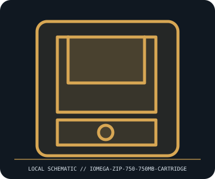

[ REMOVABLE MEDIA // MODEL-SPECIFIC ITEM ]
Iomega Zip 750 750 MB Disk
Zip 750 high-capacity removable magnetic disk; 750 MB nominal native medium capacity. This entry records the medium/product only; drives, readers, adapters, interfaces and host devices are separate unless explicitly identified.

IDENTIFICATION: Preserve the full part/model code, capacity and generation from the item label and package. Check the host’s own manual and supported firmware before insertion, formatting or writing.
Format, capacity and compatibility
| Specific product / format | Iomega Zip 750 750 MB Disk |
|---|---|
| Generation, capacity and identification | Zip 750 high-capacity removable magnetic disk; 750 MB nominal native medium capacity. |
| Compatibility | Requires a Zip 750 drive for this generation; Zip 750 devices may read earlier Zip 100/250 media, but earlier drives cannot read Zip 750 media. |
| Model/version caveat | Zip 750 is distinct from the cataloged Zip 100/250; shell resemblance is not compatibility. |
Handling and preservation
Keep the medium in its protective case, away from dust, impact, moisture, heat and contamination. Preserve the label and write-protect state; avoid forcing it into a host. Make read-only images where practical and verify checksums before any reuse.
- Retain provenance, packaging and label photographs; document any physical wear, write-protect state, read errors or repair.
- For important data, make separate copies, record checksums and periodically test restoration. A single legacy medium is not a preservation plan.
Model and version notes
Zip 750 is distinct from the cataloged Zip 100/250; shell resemblance is not compatibility.
Product-family resemblance or mechanical fit alone does not guarantee interchange. Verify exact medium generation, host model, interface, firmware and software support.
Manufacturer and standards sources
- Iomega Zip 750 manual archiveManufacturer, product, or period manual reference for the named medium/model.
- Museum of Obsolete Media — Zip formatStandards or archival reference for format-family context; exact device documentation governs fit.
Native, formatted, compressed and multi-sided capacities are not interchangeable measurements. Check the source documents for the named SKU and use the host device manual for final compatibility.